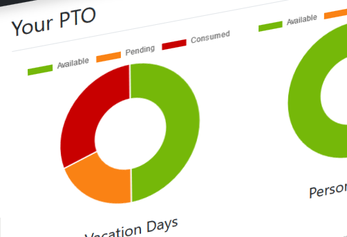

Projects

ALDI PTO Project - In Progress
This tracker tracks PTO. For our CSC4350 class we will be working with ALDI to learn about the software development process. ALDI wants us to track vacation days, sick days, and personal days for employees. We also have to consider some employees are supervisors. It will be an interesting challenge and I hope it is successful.

EDI Research Project - In Progress
For this research project delves more into electronic data interchange (EDI) and its applications.
View Project